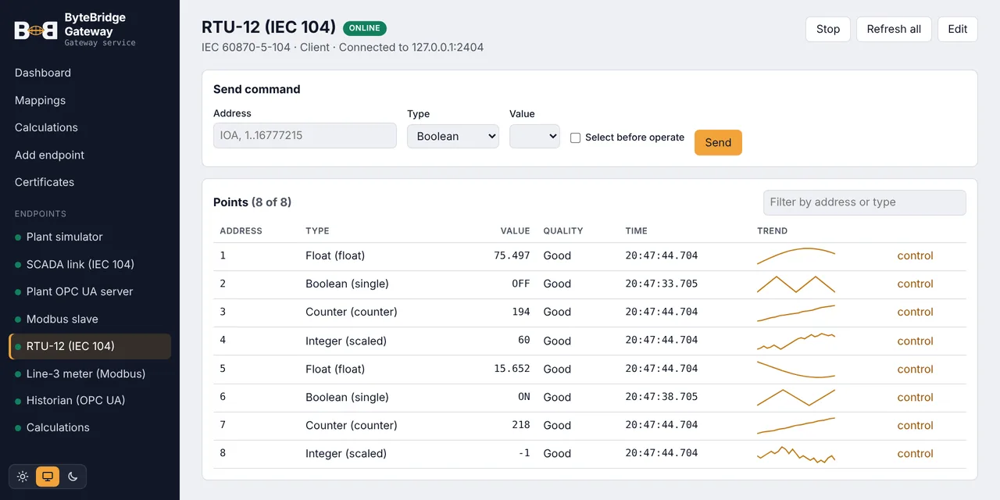
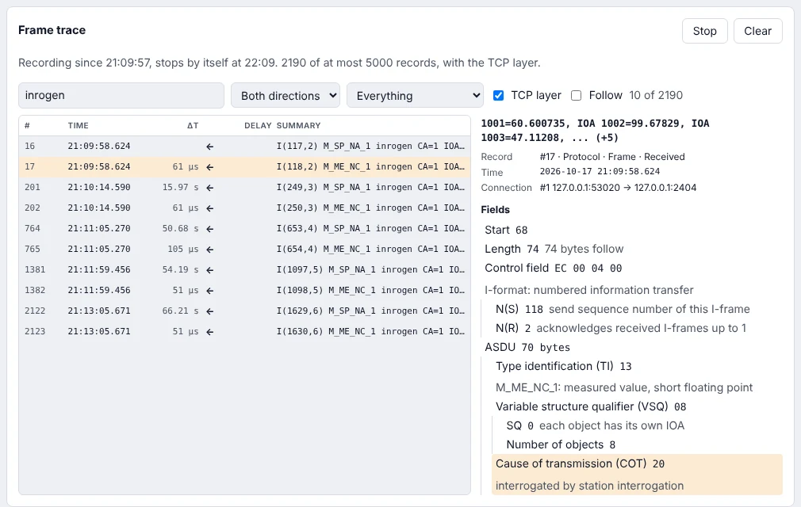
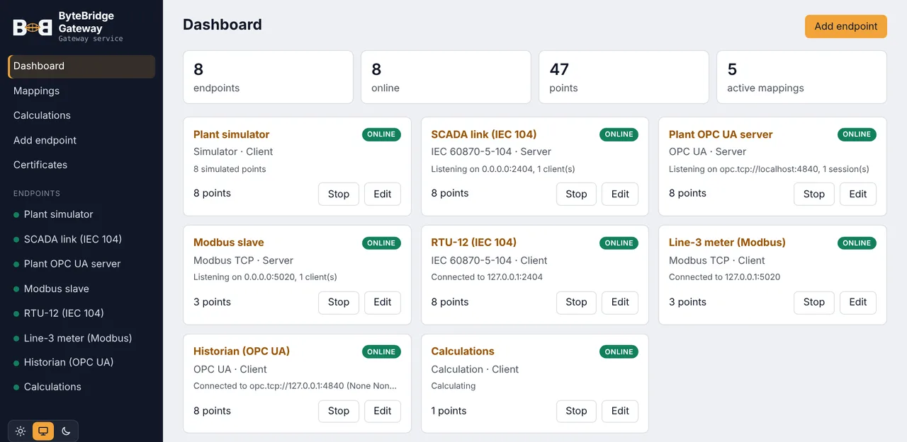

Tester
Connect to a device, watch live values, send commands, or simulate the other side. Every protocol in the same window.
ByteBridge is one lightweight application for industrial communication. It is a protocol tester on your desk, a gateway next to your devices, and the central point that ties many gateways together.
The same software works as a tester, as a gateway, or as the central point for many gateways. Pick the role you need today; the configuration you build carries over to the next one.
Connect to a device, watch live values, send commands, or simulate the other side. Every protocol in the same window.
Runs headless next to your devices and maps data between protocols. A Windows service, a Linux box, or a Docker container on a PLC.
Follows many gateways from one place: who is online, live values, commands, configuration deployment, users and an audit log.
Stop switching between a different tool for every protocol. ByteBridge gives IEC 104, Modbus, DNP3, OPC UA, OPC XML-DA and Siemens S7 the same screens: the same connection editor, the same live data table, the same way to send a command.

When a device does not answer, the connection check finds the layer that fails: the network, the TCP port, or the protocol itself. The frame trace records the connection and translates every frame field by field, so you do not need a protocol analyser or the standard at hand.
IEC 104, Modbus TCP, Siemens S7, DNP3, OPC UA and OPC XML-DA. How it works

What you build while testing is already the solution. The gateway uses the same editors and the same configuration, so there is nothing to rebuild.
Read from any supported device and publish the values through REST, MQTT, OPC UA or any other implemented protocol, at the same time. Commands from the consumer side travel back to the device, and the device's answer comes back to the sender.
Compute new points from live values with short scripts: totals, averages, deadbands, state logic. Calculated points are mapped and exposed like any device point.
// TotalPower: feeder 1 + 2 p1 + p2 // deadband of 0.5 if !("last" in state) || abs(x - state.last) > 0.5 { state.last = x; x }
The protocol engine is a small native program with a low memory footprint. It runs on an industrial PC, a Linux box, or as a Docker container on a PLC such as the WAGO PFC200, while you open the web interface from another machine.
Gateways keep working when the uplink does not.

A gateway sits between the OT network and the outside world, so it is built like a one-way door. It opens every connection to Central itself, from the inside out. Central never connects to a gateway, and no inbound port has to be opened in the plant firewall.
Two outbound connections are all a gateway needs: MQTT 5 to the broker and HTTPS to Central. Firewall rules stay short and easy to audit.
Every gateway proves who it is with its own certificate, issued by Central's certificate authority.
How a gateway is reached, and whether it accepts commands, is set on the gateway only.
The NIS2 directive asks operators of essential and important entities, energy, water, manufacturing and more, to manage the cyber risk of their networks, OT included. ByteBridge gives you the technical measures for the link between your plants and the rest of the company, and the records to show for them.
The design follows the zones and conduits model of IEC 62443: the OT network is its own zone, and the gateway is the single, documented conduit out of it.
NIS2 obligations rest with the operator, not with a product. ByteBridge supports the measures below; it is not a certification. Security details
Art. 21(2)(h). TLS on every link, mutual authentication, signed configurations, secrets encrypted at rest.
Art. 21(2)(i). Viewer, Engineer, Operator and Admin roles, single sign-on, one identity per gateway.
Art. 21(2)(b). Audit log of every command and deployment, online state of each gateway, instant revocation.
Art. 21(2)(c). Gateways run on when the link fails, buffer values on disk, and roll back to any earlier configuration.
A few ways ByteBridge is put to work. Pick one to see how it fits together.
Loading the example… open it directly.
The desktop app is the tester and a full gateway on your workstation: every protocol, mappings, calculations and the built-in simulator.
simulator * onto the server with forward commands on.127.0.0.1:2404 and watch the values arrive.Step by step, with device and gateway examples, in the documentation.
Interested in the gateway or central edition for your sites? Get in touch.